Mẹo cực hay về lệnh `fg`: khi Ctrl+Z cứu nguy cho phiên làm việc terminal của bạn
Đăng ngày 18 April 2026
- Vấn đề: một terminal đang bận
- Ba lệnh không thể thiếu
- Kịch bản 1: Bản build dài
- Kịch bản 2: Trình chỉnh sửa bị lãng quên
- Kịch bản 3: Quá trình
opencodebị tạm dừng - Kịch bản 4: Quản lý nhiều job đồng thời
- Sự khác biệt giữa
fg,bg,Ctrl+Z,Ctrl+Cvà `& - Vòng đời đầy đủ của một job
- Mẹo nâng cao
- Những cạm bẫy và lỗi thường gặp
- Sơ đồ tóm tắt
- Tại sao fg bị đánh giá thấp
- Hồ sơ kỹ thuật: các tín hiệu
- Kết luận
- Tham khảo
Bạn khởi chạy`./gradlew build`, terminal bị treo trong 3 phút, và bạn cần làm việc khác trong lúc chờ đợi? Không cần phải mở một tab mới.`Ctrl+Z`tạm dừng tiến trình,`fg`đưa nó quay trở lại chính xác nơi bạn đã để lại. Đó là tip Unix bị đánh giá thấp nhất trong công việc hàng ngày của một lập trình viên.
- mục lục
-
[]
Vấn đề: một terminal đang bận
Bất kỳ nhà phát triển nào cũng từng gặp tình huống này:
$ ./gradlew build
> Building...Terminal bị treo. Bạn không còn có thể nhập bất kỳ lệnh nào nữa. Và bạn cần xem một tệp, khởi chạy một`git status`, hoặc kiểm tra một cổng đang bị chiếm dụng.
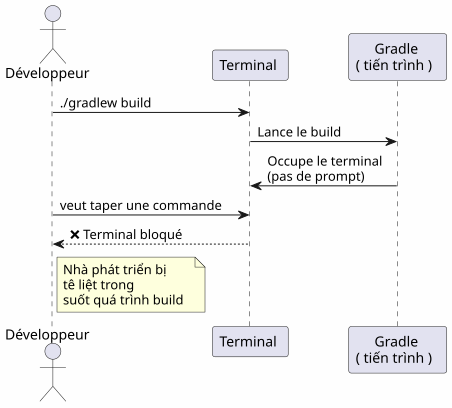
Hầu hết các nhà phát triển đều mở một terminal mới. Nhưng có một giải pháp thanh lịch hơn, nhanh hơn và nguyên bản hơn: quản lý job.
Ba lệnh không thể thiếu
Ctrl+Z — Tạm dừng (SIGTSTP)
`Ctrl+Z`gửi tín hiệu`SIGTSTP`đến tiến trình ở tiền cảnh. Tiến trình này làtạm dừng— không bị tiêu diệt — và terminal quay trở lại prompt.
$ ./gradlew build
> Building...
^Z
[1]+ Stoppé ./gradlew build
$Số trong dấu ngoặc vuông`[1]`là cáisố công việc. Le `+`chỉ định job mặc định.
fg — Đưa trở lại tiền cảnh
`fg`đưa công việc đang tạm dừng trở lại tiền cảnh. Tiến trình tiếp tục chính xác tại nơi nó đã dừng lại.
$ fg
./gradlew build
> Building... (reprend où il en était)Với một mã số công việc cụ thể:
$ fg %2bg — Tiếp tục chạy trong nền
`bg`tiếp tục quá trình mà không làm treo terminal. Lý tưởng cho các bản build dài.
$ bg
[1]+ ./gradlew build &
$Le `&`ở cuối có nghĩa là tiến trình đang chạy ngầm.
jobs — Liệt kê các job của shell
$ jobs
[1]- Stoppé vim README.md
[2]+ En cours ./gradlew build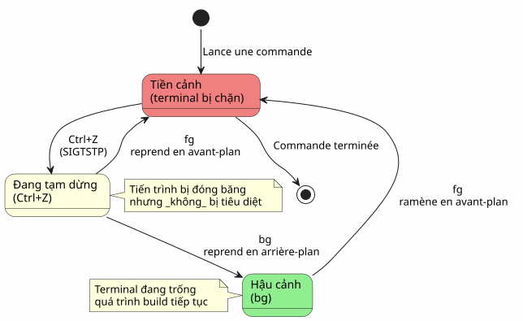
Kịch bản 1: Bản build dài
Đây là trường hợp sử dụng phổ biến nhất. Bạn chạy một build Gradle, terminal bị treo, và bạn cần làm việc khác.
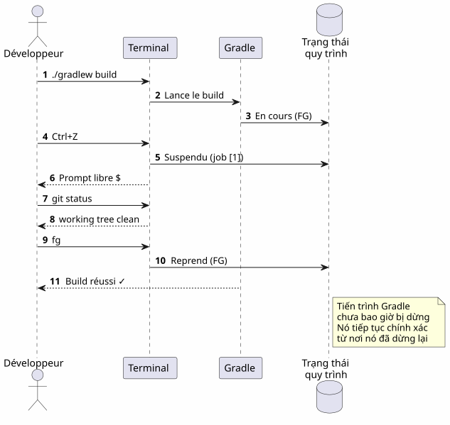
Từng bước một
$ ./gradlew build
> Building...
^Z
[1]+ Stoppé ./gradlew build
$ git status
On branch main
nothing to commit, working tree clean
$ fg
./gradlew build
> Building...
BUILD SUCCESSFUL in 2m 34sKịch bản 2: Trình chỉnh sửa bị lãng quên
Bạn đang ở trong`vim`, bạn cần tham khảo một tệp khác mà không cần thoát`vim`Vui lòng cung cấp văn bản cần dịch.
# Dans vim, en mode commande :
:shell
$ cat /path/to/other/file.txt
$ exit
# Retour dans vimNhưng nó nặng. Với`Ctrl+Z`, điều đó diễn ra tức thì :
# Dans vim, n'importe quel moment :
Ctrl+Z
[1]+ Stoppé vim README.md
$ cat /path/to/other/file.txt
# ... lire le fichier ...
$ fg
vim README.md
# Retour exact là où on en était, curseur en place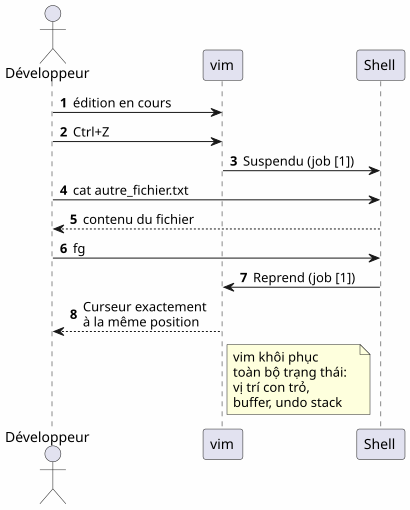
LƯU Ý:`vim`khôi phục hoàn hảo trạng thái của nó sau một`fg`: vị trí con trỏ, nội dung bộ đệm, lịch sử hoàn tác — tất cả đều được bảo toàn.
Kịch bản 3: Quá trình opencode bị tạm dừng
Đây là kịch bản đã thúc đẩy bài viết này. Bạn đang sử dụng`opencode`(công cụ CLI để điều khiển một LLM trên mã nguồn của bạn), và tiến trình bị tạm dừng.
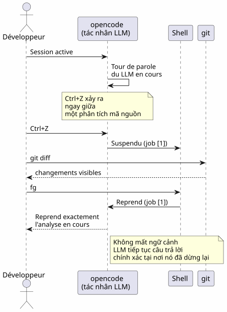
$ opencode
# ... session en cours, LLM analyse le code ...
^Z
[1]+ Stoppé opencode
$ git diff HEAD~1
# vérifier les changements récents
$ fg
opencode
# Le LLM reprend là où il s'était arrêtéLợi ích là kép:
-
Không mất ngữ cảnh: phiên LLM, lịch sử hội thoại, các tệp đang mở — tất cả đều được bảo toàn
-
Không khởi động lại: không cần khởi động lại opencode, tải lại ngữ cảnh, hay giải thích lại vấn đề cho LLM
Kịch bản 4: Quản lý nhiều job đồng thời
fg et `bg`chấp nhận một số job để nhắm mục tiêu vào một tiến trình cụ thể khi có nhiều tiến trình bị tạm dừng.
$ vim config.yml
^Z
[1]+ Stoppé vim config.yml
$ ./gradlew test
^Z
[2]+ Stoppé ./gradlew test
$ htop
^Z
[3]+ Stoppé htop
$ jobs
[1] Stoppé vim config.yml
[2]- Stoppé ./gradlew test
[3]+ Stoppé htop
$ fg %2
./gradlew test
# Le build reprend en avant-plan
$ bg %3
[3] htop &
# htop reprend en arrière-plan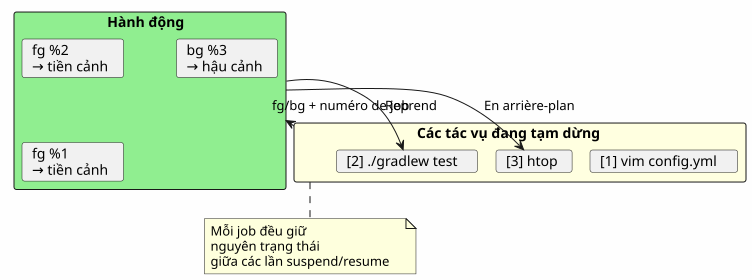
Tóm tắt các lệnh job
| Lệnh | Hiệu ứng | Ví dụ |
|---|---|---|
|
Tạm dừng tiến trình ở tiền cảnh |
Gửi`SIGTSTP` |
|
Quay lại công việc mặc định ở tiền cảnh |
|
|
Tiếp tục job |
|
|
Tiếp tục công việc mặc định ở chế độ chạy ngầm |
|
|
Tiếp tục job |
|
|
Liệt kê các job của shell hiện tại |
|
|
Hoàn thành công việc n |
|
Sự khác biệt giữa fg, bg, Ctrl+Z, Ctrl+C và `&
Nhiều nhà phát triển nhầm lẫn giữa các cơ chế này. Dưới đây là lời giải thích mang tính quyết định.
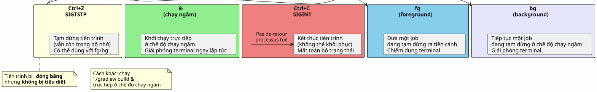
| Phím tắt/Lệnh | Tín hiệu | Hiệu ứng | Quay lại? |
|---|---|---|---|
|
|
Tạm dừng tiến trình (đóng băng, trong bộ nhớ) |
Có:`fg` ou |
|
|
Kill tiến trình (đã hoàn tất) |
Không: tiến trình đã bị hủy |
|
|
Kill tiến trình + core dump |
Không : tiến trình đã bị hủy |
|
Vui lòng cung cấp nội dung cần dịch. |
Chạy trực tiếp trong nền |
`fg`để đưa nó trở lại tiền cảnh |
Ctrl+Z`làkhông phá hủy. Quá trình được đóng băng nguyên trạng trong bộ nhớ. Bạn có thể tiếp tục ngay lập tức với`fg. Đó là một tạm dừng, không phải là dừng hẳn.
|
Vòng đời đầy đủ của một job
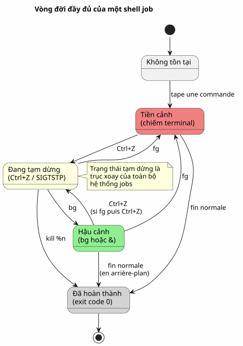
Mẹo nâng cao
fg với công việc gần đây nhất và chương trình đào tạo song hành
fg`không có đối số sẽ trả về job được đánh dấu+(mới nhất). Nhưng bạn cũng có thể sử dụng%-`để nhắm mục tiêu công việc trước đó:
$ vim file1.txt
^Z
[1]+ Stoppé vim file1.txt
$ vim file2.txt
^Z
[2]+ Stoppé vim file2.txt
$ fg # ramène job [2] (le plus récent)
$ fg %- # ramène job [1] (le précédent)kết thúc một job một cách sạch sẽ
$ jobs
[1]- Stoppé vim config.yml
[2]+ Stoppé ./gradlew test
$ kill %2 # envoie SIGTERM au job 2
$ kill -9 %1 # envoie SIGKILL au job 1 (force)désown : tách khỏi shell
`disown`loại bỏ một tác vụ khỏi bảng tác vụ của shell. Tiến trình vẫn tiếp tục chạy nhưng không còn có thể được đưa trở lại bằng`fg`Vui lòng cung cấp văn bản cần dịch.
$ ./gradlew build &
[1] 12345
$ disown %1
# Le processus continue mais n'est plus lié au shell
# Ça survives à la fermeture du terminalKết hợp với nohup cho các tiến trình dài
Để một tiến trình tiếp tục chạy sau khi đóng terminal:
$ nohup ./gradlew build &
[1] 12345
$ disown %1
# Le build continue même si vous fermez le terminal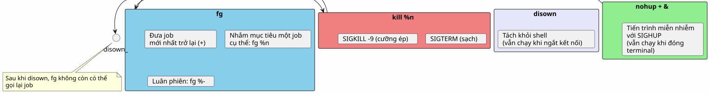
Những cạm bẫy và lỗi thường gặp
Nhầm lẫn giữa Ctrl+Z và `Ctrl+C
Đây là lỗi phổ biến nhất.`Ctrl+C`tiêu diệt tiến trình.`Ctrl+Z`chế độ tạm dừng. Nếu bạn nhấn vào`Ctrl+C`theo phản xạ, toàn bộ trạng thái bị mất — các tệp đang mở, các phiên LLM, các bản build đang chạy.
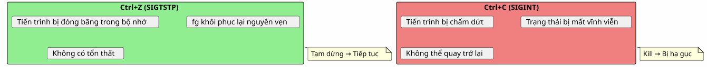
Các job là cục bộ đối với shell
jobs, fg et `bg`chỉ hoạt động trong shell đã khởi chạy các tiến trình. Nếu bạn mở một terminal mới, bạn sẽ không thấy các job của terminal kia.
# Terminal 1
$ vim file.txt
^Z
[1]+ Stoppé vim file.txt
# Terminal 2 (nouveau)
$ jobs
# (rien — les jobs sont locaux au shell)Để xem các tiến trình trên toàn hệ thống, hãy sử dụng`ps` ou `htop`Vui lòng cung cấp văn bản cần dịch.
ps aux | grep vimCác job không tồn tại sau khi shell đóng
Nếu bạn đóng terminal, tất cả các job đang bị tạm dừng hoặc chạy ngầm sẽ bị hủy. Để một tiến trình có thể tiếp tục chạy, hãy sử dụng`nohup`+`disown`Vui lòng cung cấp văn bản cần dịch.
$ nohup ./gradlew build &
[1] 12345
$ disown %1
# Fermer le terminal → le build continueCác tiến trình tương tác và `fg
Một số chương trình tương tác hoạt động không ổn định sau một`Ctrl+Z`+fg. Điều này hiếm khi xảy ra nhưng vẫn có thể xảy ra:
-
Một số chương trình sử dụng tín hiệu (
vim,htop,lessxử lý tốt`Ctrl+Z`) -
Các chương trình mạng dài (ssh, opencode) thường khôi phục chính xác
-
Các chương trình sửa đổi terminal (ncurses) đôi khi có thể khiến terminal rơi vào trạng thái không mong muốn
Trong trường hợp thiết bị đầu cuối bị lỗi sau một`fg`, nhập:
resetSơ đồ tóm tắt
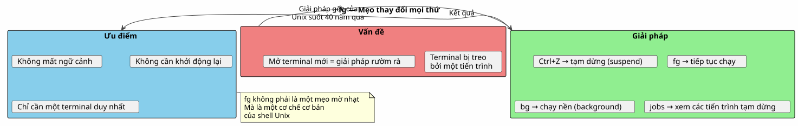
Tại sao fg bị đánh giá thấp
Hầu hết các nhà phát triển hiện đại khám phá`fg`muộn, hoặc thậm chí không bao giờ. Một vài lý do:
-
Các IDE ẩn terminal: VS Code cung cấp một terminal tích hợp, nhưng việc có nhiều tab khiến`fg`có vẻ ít cần thiết hơn
-
Các công cụ đồ họa thay thế cho các CLI: các trình quản lý tệp, các trình giám sát hệ thống, các ứng dụng Git graph giao diện người dùng
-
tmux và screen: các bộ dồn kênh này giải quyết cùng một vấn đề theo những cách khác nhau, nhưng`fg`đơn giản hơn và luôn có sẵn
Tuy nhiên,`fg`là:
-
Phổ quát: có mặt trong tất cả các shell POSIX (bash, zsh, fish…)
-
Không phụ thuộc: không cần cài đặt tmux hoặc screen
-
Ảnh chụp tức thời: hai cú đánh (
Ctrl+Z`sau đó`fg) để tạm dừng và tiếp tục -
Trình bảo toàn ngữ cảnh: trạng thái của tiến trình vẫn nguyên vẹn
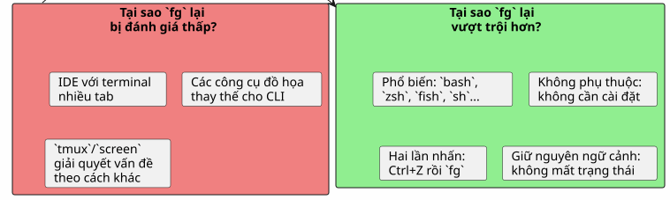
Hồ sơ kỹ thuật: các tín hiệu
Dành cho những ai tò mò, đây là các tín hiệu liên quan:
| Tín hiệu | Tên | Được gửi bởi | Hiệu ứng |
|---|---|---|---|
2 |
|
|
Ngắt — kết thúc tiến trình |
3 |
|
|
Thoát với core dump |
18 |
|
|
Dừng tương tác — tạm dừng quy trình |
19 |
|
|
Continue — tiếp tục một tiến trình bị tạm dừng |
15 |
|
|
Kết thúc sạch |
9 |
|
|
Kết thúc cưỡng bức (không thể đánh chặn) |
Luồng hoàn chỉnh:
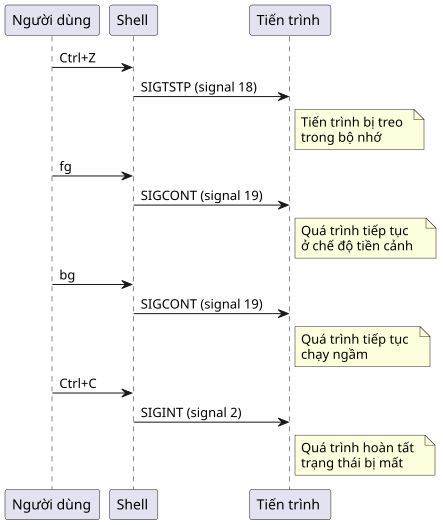
Kết luận
`fg`không phải là một mẹo ít người biết — đó là một cơ chế cơ bản của shell Unix, đã có từ những năm 70. Việc hầu hết các lập trình viên không biết điều này là một triệu chứng của thời đại chúng ta: các IDE và trình multiplexer đã khiến chúng ta rời xa những kiến thức nền tảng.
Nhưng khi bạn đang ở trên một máy chủ SSH, trong một terminal tối giản, hoặc đơn giản là đang sử dụng`opencode`và LLM đang trong quá trình xử lý —Ctrl+Z, fg, bg, `jobs`là những người bạn tốt nhất của bạn.
Please provide the text you would like me to translate. Ctrl+Z tạm dừng, fg tiếp tục. Đó là nút tạm dừng-phát của terminal. Vui lòng cung cấp văn bản cần dịch.
Tham khảo
-
man bash— phần JOB CONTROL -
man signal— danh sách các tín hiệu POSIX -
Hướng dẫn Bash-Scripting Nâng cao — Kiểm soát Công việc (Job Control)